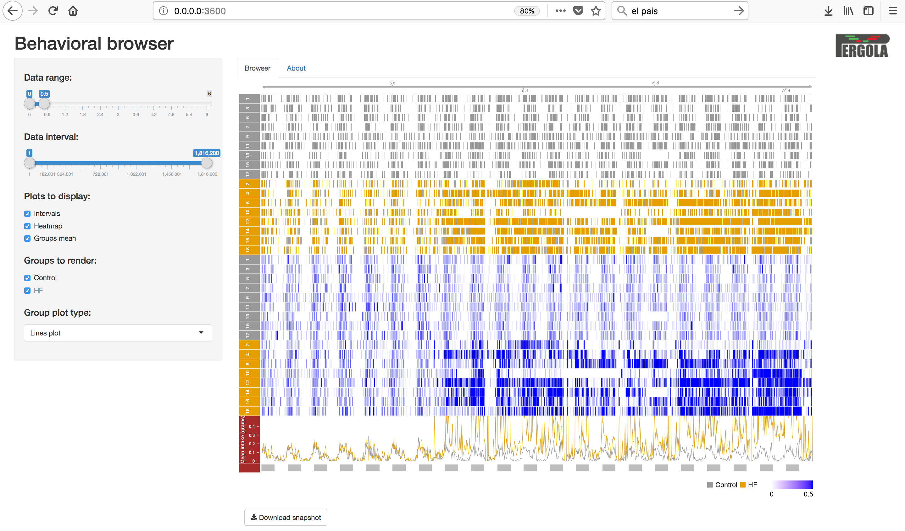
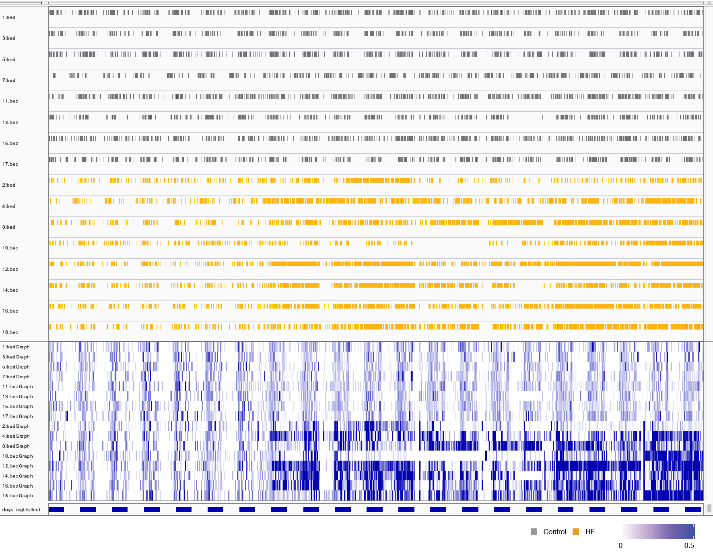

Visualization¶
One of the main benefits of using Pergola is that it allows you to easily visualize longitudinal behavioral data using ready-to-use genomic tools. Here you will find some examples of how to use these tools.
Shiny-pergola¶
Using several Bioconductor packages (Gviz, rtracklayer and GenomicRanges) and Shiny we created an ad-hoc browser to visualize data. The code of this interactive web app can be found in our GitHub repository. We distributed Shiny-pergola as a Docker image to make easier its use. Read the following sections to learn how to use Shiny-pergola Docker image.
Requirements¶
Shiny-pergola needs Docker to be installed in your system. If you don’t have Docker installed in your system you can follow the instructions in the Docker installation section.
Get a sample data set¶
Besides, you need a data set to be displayed on the browser. If you want to give Shiny-pergola a try, you may want to use our sample data set that consists in longitudinal behavioral recordings of mice feeding behavior processed with Pergola. The data is host in Zenodo and can be download with the following command:
mkdir data
wget -O- https://zenodo.org/record/1162230/files/mouse__viz_shiny_pergola_sample_data.tar.gz | tar xz -C data
cd data
Pull image¶
First thing you have to do is to pull Shiny-pergola Docker image from Pergola Docker Hub:
docker pull pergola/shiny-pergola:0.1.1
Run image¶
Once you have downloaded the Shiny-pergola image you can launch it by executing: You should be in the folder where you have untar the sample data.
docker run --rm -p 3600:80 -v "$(pwd)":/pergola_data pergola/shiny-pergola:0.1.1 &
Note
“$(pwd)” can be substitute by where you have untar the downloaded data
Visualize data¶
To visualize the data you just need to go to your web browser and type in your address bar the ip address returned by the following command e.g. http://0.0.0.0:3600
IGV¶
The Integrative Genomics Viewer (IGV )is a widely-used, powerful genomic desktop browser. You can use IGV to visualize longitudinal behavioral after converting the data to genomic formats such as BED or BedGraph.
Get IGV adapted version¶
We adapted IGV to display time units instead of base pairs. This version of IGV is available for its download here with detailed instructions of how to compile it.
Create a genome¶
After launching IGV, first you have to create a genome file. Go to Genomes menu and click on “Create .genome File…” Data can be visualize using a heatmap.

On the menu that pops up load the fasta file generated by Pergola and click on OK.

Load files¶
Now you can render your Pergola processed files by going to File menu and click on “Load from File…”

Set graphical parameters¶
Finally to obtain a heatmap of the tracks it is necessary to set some options:
To visualize all the tracks in the screen go to Tracks and click on “Fit Data to Window”
By right-clicking on tracks names a menu will pop up. On this menu you can choose between several options of how to display your data. For instance, in the case of BedGraph files you can set with which type of graph they are rendered (heatmap, lines plot, etc.).
Visualize data¶
This is an example of how you data will show up on IGV.
Bioconductor packages¶
You can use some of the Bioconductor libraries developed for the visualization of genomic information to render behavioral data once processed with Pergola. Bioconductor is a software project that for the analysis of genomic data developed in the R programming language. Some of these libraries provide nice functionalities for the programmatic visualization of data.
Packages¶
Among the available packages we have tried Sushi and Gviz. Both packages provide very nice capabilities to visualize data, you can see below the result of visualizing the data using them in the snapshots below.